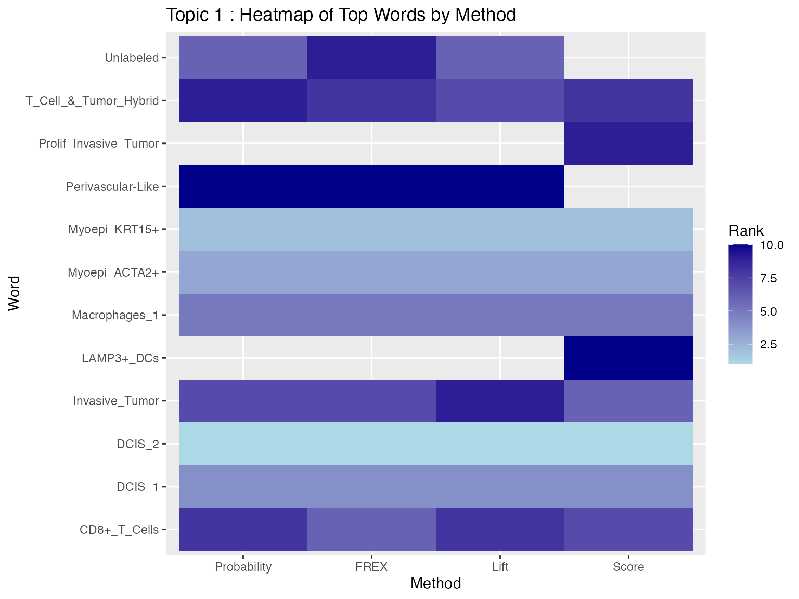
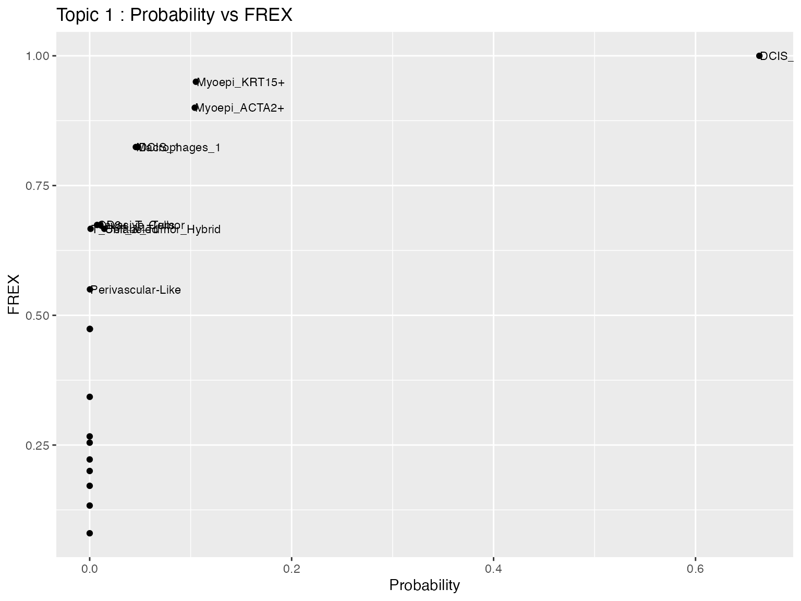
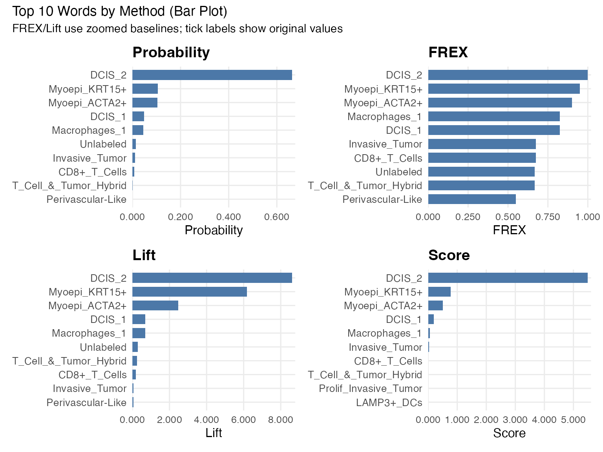
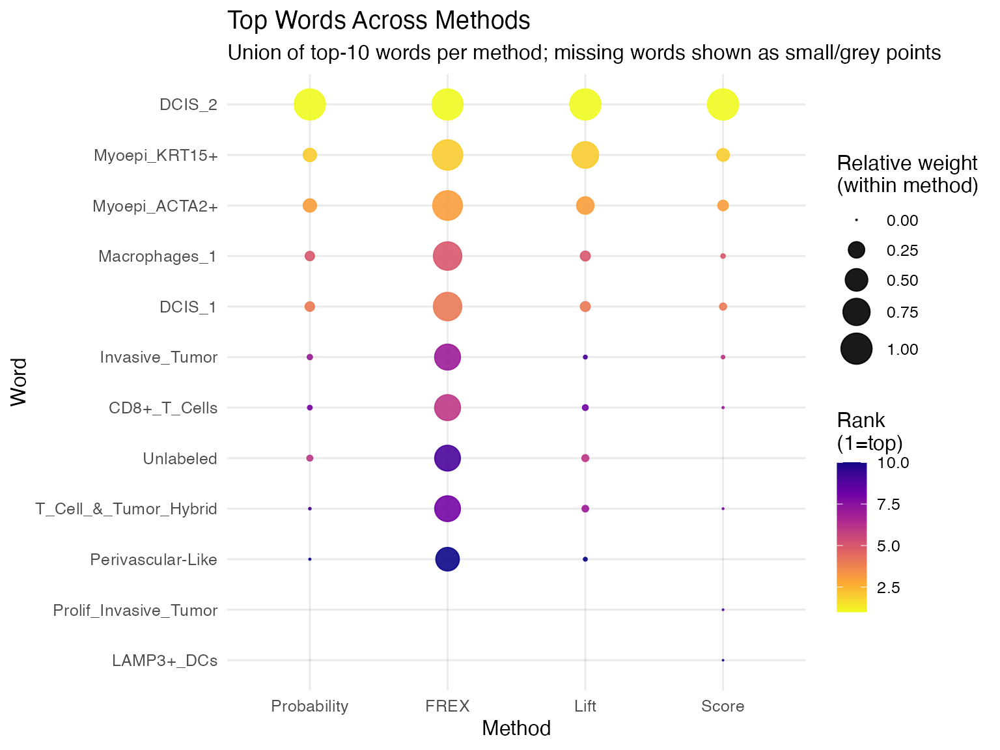
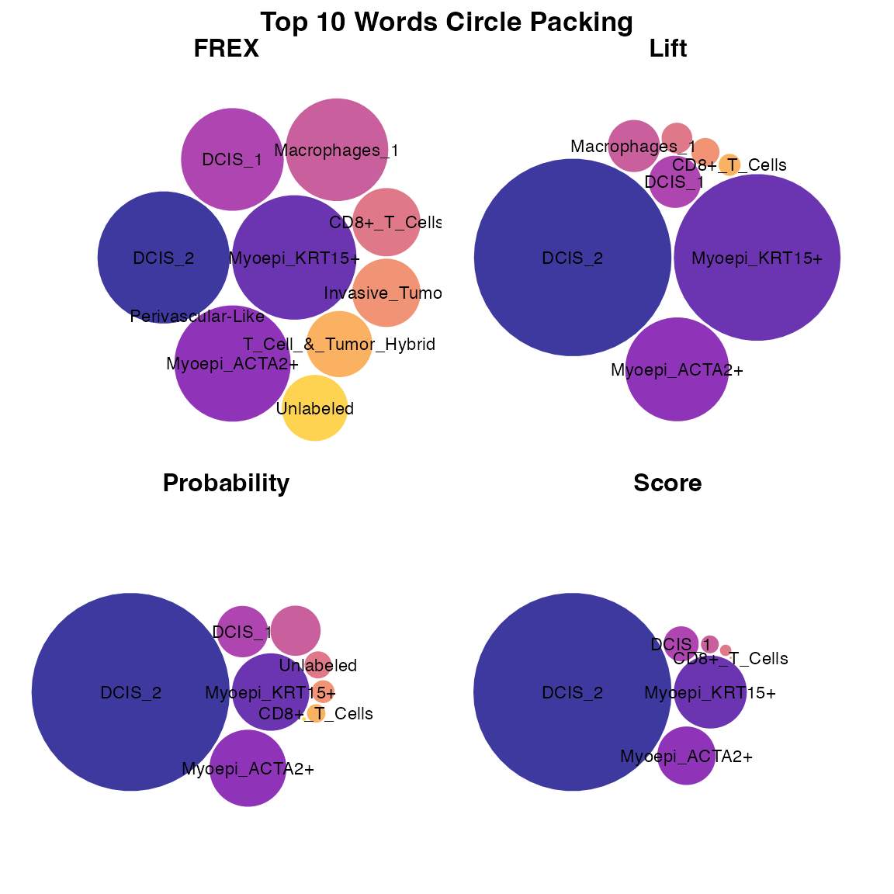
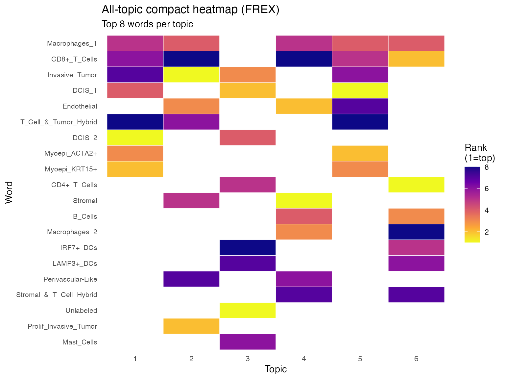

Label Topics Xenium Examples
Nikki Xiao
2026-03-26
Source:vignettes/articles/Label_Topics_Xenium.Rmd
Label_Topics_Xenium.RmdOverview
This tutorial shows how to use the topic labeling functions
label_topics(), prob_topic(),
frex_topic(), lift_topic(), and
score_topic() using the Xenium spatial transcriptomics
example (see results in the Xenium Example page). The goal
is to fit a topic model, extract the topic-word probability matrix and
related inputs, apply the labeling functions, and visualize the results
for selected topics.
Data Preprocessing
We load the packages needed for this tutorial and source the file that contains the topic labeling functions.
library(SpaTopic)
library(dplyr)
library(tidyr)
library(tidyverse)
library(patchwork)
library(ggplot2)
library(rlang)
library(packcircles)
library(forcats)
library(scales)
library(purrr)
library(tibble)
load(file = "/Users/nikkixiaomengqi/Documents/research/sample1.spatopic_result_topics6.rdata")
beta_mat <- t(as.matrix(spatopic.res$Beta))
vocab <- rownames(spatopic.res$Beta)
wordcounts <- rowSums(spatopic.res$Nwk) # Total frequency of each cell type across all topicsLet’s check the inputs:
The matrix beta_mat should be a topic-by-feature
probability matrix, where each row represents a topic and each
column represents a feature. In this Xenium example, the features
correspond to cell type labels. The vector vocab should
contain the names of these features, and its length must match the
number of columns of beta_mat. The vector
wordcounts should contain the total frequency of each
feature across the dataset, and its length must also match the number of
columns of beta_mat. Additionally, each row of
beta_mat should sum to 1, since it represents a probability
distribution over features for a given topic.
Label Topics Functions
Labeling Methods
The label_topics() function ranks features using four
methods:
Highest Probability
For each topic, features are ranked by their probability within that topic. The top features with the largest probabilities are selected.
where is the probability of feature in topic .
FREX
FREX combines frequency and exclusivity using a weighted harmonic
mean. Frequency is the word probabilities ranked and scaled to values
between 0 and 1. Then exclusivity is computed by dividing each feature’s
probability by its total probability across topics, followed by ranking
and scaling within each topic. The frequency-exclusivity framework was
proposed by Airoldi and Bischof (2016), and the formula used here
follows the implementation in the stm package (Roberts et
al., 2019).
where:
- = frequency rank of feature in topic
- = exclusivity rank of feature in topic
- = user-defined weight (default = 0.5)
Lift
Lift compares a feature’s topic probability to its overall frequency in the dataset (Taddy, 2013).
First compute:
Then:
Score
The score is computed by first taking the logarithm of the topic-word probabilities. Then calculate the average log probability across all topics for each word to represent its overall baseline level. For each topic and word, compute the difference between its log probability in that topic and its average log probability, and multiply by beta to get the final score (Chang, 2024).
where is the number of topics.
Now, we apply the main labeling function label_topics()
to get the top features for each topic. The output is a list containing
results from four labeling methods: highest probability, FREX, lift, and
score. We only show the results of topic 1 here, you can change it to
the topic you want to rank, or by default it will calculate top 10
topics like we set above. The function computes topic labels using all
four methods at once, and returns the top-ranked words for each topic.
Unlike the helper functions used later, it only returns the rankings and
does not provide the underlying values for each metric.
results <- label_topics(beta_mat, vocab, wordcounts)
results$prob[,1] # highest prob
#> [1] "DCIS_2" "Myoepi_KRT15+" "Myoepi_ACTA2+" "DCIS_1"
#> [5] "Macrophages_1" "Unlabeled" "Invasive_Tumor" "CD8+_T_Cells"
results$frex[,1] # frex
#> [1] "DCIS_2" "Myoepi_KRT15+" "Myoepi_ACTA2+"
#> [4] "DCIS_1" "Macrophages_1" "CD8+_T_Cells"
#> [7] "Invasive_Tumor" "T_Cell_&_Tumor_Hybrid"
results$lift[,1] # lift
#> [1] "DCIS_2" "Myoepi_KRT15+" "Myoepi_ACTA2+"
#> [4] "DCIS_1" "Macrophages_1" "Unlabeled"
#> [7] "T_Cell_&_Tumor_Hybrid" "CD8+_T_Cells"
results$score[,1] # score
#> [1] "DCIS_2" "Myoepi_KRT15+" "Myoepi_ACTA2+"
#> [4] "DCIS_1" "Macrophages_1" "Invasive_Tumor"
#> [7] "CD8+_T_Cells" "T_Cell_&_Tumor_Hybrid"We now use the helper functions to extract the top 10 features and their values for Topic 1 under each labeling method.
topic_id <- 1
top_n <- 10
prob_t1 <- prob_topic(beta_mat, vocab, topic = topic_id, top_n = top_n)
prob_t1
#> rank word prob
#> 1 1 DCIS_2 0.6632093984
#> 2 2 Myoepi_KRT15+ 0.1051923573
#> 3 3 Myoepi_ACTA2+ 0.1040562871
#> 4 4 DCIS_1 0.0478724503
#> 5 5 Macrophages_1 0.0457035889
#> 6 6 Unlabeled 0.0145132972
#> 7 7 Invasive_Tumor 0.0105886909
#> 8 8 CD8+_T_Cells 0.0073353989
#> 9 9 T_Cell_&_Tumor_Hybrid 0.0008804544
#> 10 10 Perivascular-Like 0.0002607798
frex_t1 <- frex_topic(beta_mat, vocab, topic = topic_id, top_n = top_n, frex_weight = 0.5)
frex_t1
#> word frex
#> 1 DCIS_2 1.0000000
#> 2 Myoepi_KRT15+ 0.9500000
#> 3 Myoepi_ACTA2+ 0.9000000
#> 4 DCIS_1 0.8242424
#> 5 Macrophages_1 0.8242424
#> 6 CD8+_T_Cells 0.6740741
#> 7 Invasive_Tumor 0.6740741
#> 8 T_Cell_&_Tumor_Hybrid 0.6666667
#> 9 Unlabeled 0.6666667
#> 10 Perivascular-Like 0.5500000
lift_t1 <- lift_topic(beta_mat, vocab, wordcounts, topic = topic_id, top_n = top_n)
lift_t1
#> word lift
#> 1 DCIS_2 8.61048308
#> 2 Myoepi_KRT15+ 6.17103976
#> 3 Myoepi_ACTA2+ 2.46659563
#> 4 DCIS_1 0.68749805
#> 5 Macrophages_1 0.68624916
#> 6 Unlabeled 0.28466694
#> 7 T_Cell_&_Tumor_Hybrid 0.25080245
#> 8 CD8+_T_Cells 0.17733908
#> 9 Invasive_Tumor 0.05168356
#> 10 Perivascular-Like 0.05165718
score_t1 <- score_topic(beta_mat, vocab, topic = topic_id, top_n = top_n)
score_t1
#> word score
#> 1 DCIS_2 5.495172e+00
#> 2 Myoepi_KRT15+ 7.741304e-01
#> 3 Myoepi_ACTA2+ 5.049247e-01
#> 4 DCIS_1 1.906234e-01
#> 5 Macrophages_1 5.508066e-02
#> 6 Invasive_Tumor 2.525973e-02
#> 7 CD8+_T_Cells 2.732292e-03
#> 8 T_Cell_&_Tumor_Hybrid 3.957292e-04
#> 9 Prolif_Invasive_Tumor 8.964951e-05
#> 10 LAMP3+_DCs -5.456373e-06Visualization
Heatmap
We now visualize the results using a heatmap, which shows each method on the x-axis and the top features on y-axis for Topic 1. The lighter color represent higher-ranked features, while darker colors represent lower-ranked features. Blank spaces indicate that a word does not appear in the top 10 for that method.
# first we create a data frame that combined the top 10 words from each method
heat_data <- bind_rows(
prob_t1 %>% transmute(word, method = "Probability", value = prob),
frex_t1 %>% transmute(word, method = "FREX", value = frex),
lift_t1 %>% transmute(word, method = "Lift", value = lift),
score_t1 %>% transmute(word, method = "Score", value = score)
)
heat_data$method <- factor(
heat_data$method,
levels = c("Probability", "FREX", "Lift", "Score") # set x axis method order
)
# rank words within each method, rank = 1 is the highest value
heat_data_ranked <- heat_data %>%
group_by(method) %>%
mutate(rank = rank(-value, ties.method = "first")) %>%
ungroup()
ggplot(heat_data_ranked, aes(x = method, y = word, fill = rank)) +
geom_tile() +
scale_fill_gradient(low = "lightblue", high = "darkblue") +
labs(
title = paste("Topic", topic_id, ": Heatmap of Top Words by Method"),
x = "Method",
y = "Word",
fill = "Rank"
)
Scatter Plot
We next compare two labeling methods directly using a scatter plot. In this example, the x-axis shows the Probability values and the y-axis shows the FREX values for all features in Topic 1. Each point represents one feature, and selected features are labeled for easier interpretation.
scatter_data <- full_join(
prob_topic(beta_mat, vocab, topic = topic_id),
frex_topic(beta_mat, vocab, topic = topic_id, frex_weight = 0.5),
by = "word"
)
top_words <- union(prob_t1$word, frex_t1$word)
scatter_data$label <- ifelse(scatter_data$word %in% top_words,
scatter_data$word, "")
ggplot(scatter_data, aes(x = prob, y = frex)) +
geom_point() +
geom_text(aes(label = label), hjust = 0, nudge_x = 0.0005, size = 3) +
labs(
title = paste("Topic", topic_id, ": Probability vs FREX"),
x = "Probability",
y = "FREX"
)
Bar plot
We use faceted bar plots to compare top words under each method. This is easier to read than stacking all methods in one bar because each metric has its own scale.
make_zoom_bar <- function(df, value_col, title, y_lab, zoom_min = 0, zoom_max = NULL, n = 10) {
value_col <- ensym(value_col)
plot_df <- df %>%
slice_max(order_by = !!value_col, n = n, with_ties = FALSE) %>%
arrange(!!value_col) %>%
mutate(plot_val = !!value_col - zoom_min)
if (is.null(zoom_max)) {
zoom_max <- max(pull(plot_df, !!value_col), na.rm = TRUE)
}
ggplot(plot_df, aes(x = reorder(word, !!value_col), y = plot_val)) +
geom_col(width = 0.72, fill = "#4C78A8") +
coord_flip() +
scale_y_continuous(
limits = c(0, zoom_max - zoom_min),
labels = function(x) number(x + zoom_min, accuracy = 0.001),
expand = expansion(mult = c(0, 0.02))
) +
labs(title = title, x = NULL, y = y_lab) +
theme_minimal(base_size = 12) +
theme(
plot.title = element_text(face = "bold"),
axis.text.y = element_text(size = 10),
panel.grid.minor = element_blank()
)
}
p_prob <- make_zoom_bar(prob_t1, prob, "Probability", "Probability", zoom_min = 0)
p_frex <- make_zoom_bar(frex_t1, frex, "FREX", "FREX", zoom_min = 0)
p_lift <- make_zoom_bar(lift_t1, lift, "Lift", "Lift", zoom_min = 0)
p_score <- make_zoom_bar(score_t1, score, "Score", "Score", zoom_min = 0)
(p_prob | p_frex) / (p_lift | p_score) +
plot_annotation(
title = "Top 10 Words by Method (Bar Plot)",
subtitle = "FREX/Lift use zoomed baselines; tick labels show original values"
)
Bubble Plot
We also visualize the top features across methods using a bubble plot. Each column represents one labeling method, and each row represents a feature that appears in at least one top-10 list for Topic 1. The size of each bubble represents the relative weight of that feature within the method, while the color indicates its rank (1 = highest rank).
# helper function to grab top 10 and scale to 0-1 (used by size/circle visualizations)
get_top_10_scaled <- function(df, val_col, method_name) {
df %>%
rename(value = !!sym(val_col)) %>%
slice_max(order_by = value, n = 10) %>%
mutate(
method = method_name,
scaled_val = value / max(value)
) %>%
select(method, word, scaled_val)
}
combined_scaled <- bind_rows(
get_top_10_scaled(prob_t1, "prob", "Probability"),
get_top_10_scaled(frex_t1, "frex", "FREX"),
get_top_10_scaled(lift_t1, "lift", "Lift"),
get_top_10_scaled(score_t1, "score", "Score")
)
get_top_n <- function(df, val_col, method_name, n = 10) {
val_col <- ensym(val_col)
df %>%
transmute(word, value = !!val_col) %>%
slice_max(value, n = n, with_ties = FALSE) %>%
arrange(desc(value)) %>%
mutate(
method = method_name,
rank = row_number(),
scaled = value / max(value, na.rm = TRUE)
) %>%
select(method, word, value, scaled, rank)
}
top_all <- bind_rows(
get_top_n(prob_t1, prob, "Probability"),
get_top_n(frex_t1, frex, "FREX"),
get_top_n(lift_t1, lift, "Lift"),
get_top_n(score_t1, score, "Score")
) %>%
mutate(method = factor(method, levels = c("Probability", "FREX", "Lift", "Score")))
# complete union of words across methods
plot_df <- top_all %>%
complete(method, word, fill = list(value = 0, scaled = 0, rank = NA))
ggplot(plot_df, aes(x = method, y = fct_reorder(word, scaled, .fun = max), size = scaled, color = rank)) +
geom_point(alpha = 0.9) +
scale_size(range = c(0, 8), name = "Relative weight\n(within method)") +
scale_color_viridis_c(direction = -1, option = "C", na.value = "grey85", name = "Rank\n(1=top)") +
labs(
title = "Top Words Across Methods",
subtitle = "Union of top-10 words per method; missing words shown as small/grey points",
x = "Method", y = "Word"
) +
theme_minimal(base_size = 12)
Circle Packing Plot
We can also visualize the top features using a circle packing plot. Each panel represents one labeling method, and each circle represents a top-ranked feature for Topic 1. The size of the circle reflects the relative weight of that feature within the method, so larger circles indicate stronger importance. Labels inside the circles identify the corresponding features.
generate_packing <- function(df_subset, size_col = "scaled_val", eps = 1e-6) {
dat <- df_subset %>%
transmute(
word,
method,
size_raw = as.numeric(.data[[size_col]])
) %>%
filter(is.finite(size_raw))
# nothing usable
if (nrow(dat) == 0) {
return(list(vertices = tibble(), labels = tibble()))
}
# Make sizes strictly positive (works even if raw values are <= 0)
dat <- dat %>%
mutate(size = size_raw - min(size_raw, na.rm = TRUE) + eps)
packing <- circleProgressiveLayout(dat$size, sizetype = "area")
# Guard against any invalid circles
ok <- is.finite(packing$x) & is.finite(packing$y) &
is.finite(packing$radius) & packing$radius > 0
packing <- packing[ok, , drop = FALSE]
dat <- dat[ok, , drop = FALSE]
if (nrow(packing) == 0) {
return(list(vertices = tibble(), labels = tibble()))
}
vertices <- circleLayoutVertices(packing, npoints = 50) %>%
as_tibble() %>%
mutate(method = dat$method[1])
labels <- as_tibble(packing) %>%
mutate(
word = dat$word,
method = dat$method,
size_raw = dat$size_raw
)
list(vertices = vertices, labels = labels)
}
# run per method
all_results <- combined_scaled %>%
split(.$method) %>%
map(generate_packing)
all_vertices <- map_dfr(all_results, "vertices")
all_labels <- map_dfr(all_results, "labels")
# plot
ggplot() +
# Draw the circles
geom_polygon(data = all_vertices,
aes(x, y, group = id, fill = as.factor(id)),
colour = "white", alpha = 0.8) +
# Add the text inside the circles
geom_text(data = all_labels,
aes(x, y, label = word),
size = 3, check_overlap = TRUE) +
# Separate into 4 panels
facet_wrap(~method) +
scale_fill_viridis_d(option = "plasma", guide = "none") +
theme_void() + # Remove axes and grids for the "bubble cloud" look
theme(
strip.text = element_text(face = "bold", size = 12, margin = margin(b = 10)),
plot.title = element_text(hjust = 0.5, face = "bold")
) +
coord_equal() +
labs(title = "Top 10 Words Circle Packing")
All-Topic Heatmap
We extend the visualization to all topics using a compact heatmap. Each column represents a topic, and each row represents a feature that appears in at least one top-8 list under the FREX method. The color indicates the ranking of the feature within each topic, where lighter colors represent higher-ranked features and darker colors represent lower-ranked features. Blank spaces indicate that the feature does not appear in the top 8 for that topic.
method_for_all_topics <- "frex" # choose one of: "prob", "frex", "lift", "score"
top_n_all_topics <- 8
frex_weight <- 0.5
K <- nrow(beta_mat)
extract_topic_method <- function(topic_id, method = "frex", top_n = 8) {
if (method == "prob") {
prob_topic(beta_mat, vocab, topic = topic_id, top_n = top_n) %>%
transmute(topic = topic_id, word, value = prob)
} else if (method == "frex") {
frex_topic(beta_mat, vocab, topic = topic_id, top_n = top_n, frex_weight = frex_weight) %>%
transmute(topic = topic_id, word, value = frex)
} else if (method == "lift") {
lift_topic(beta_mat, vocab, wordcounts, topic = topic_id, top_n = top_n) %>%
transmute(topic = topic_id, word, value = lift)
} else if (method == "score") {
score_topic(beta_mat, vocab, topic = topic_id, top_n = top_n) %>%
transmute(topic = topic_id, word, value = score)
} else {
stop("method must be one of: prob, frex, lift, score")
}
}
all_topic_df <- bind_rows(lapply(seq_len(K), extract_topic_method, method = method_for_all_topics, top_n = top_n_all_topics)) %>%
group_by(topic) %>%
mutate(rank = rank(-value, ties.method = "first")) %>%
ungroup()
# order words by frequency of appearance across topics, then average rank
word_order <- all_topic_df %>%
group_by(word) %>%
summarise(n_topics = n_distinct(topic), avg_rank = mean(rank), .groups = "drop") %>%
arrange(desc(n_topics), avg_rank) %>%
pull(word)
all_topic_df <- all_topic_df %>%
mutate(
topic = factor(topic),
word = factor(word, levels = rev(word_order))
)
ggplot(all_topic_df, aes(x = topic, y = word, fill = rank)) +
geom_tile(color = "white", linewidth = 0.2) +
scale_fill_viridis_c(direction = -1, option = "C") +
labs(
title = paste("All-topic compact heatmap (", toupper(method_for_all_topics), ")", sep = ""),
subtitle = paste("Top", top_n_all_topics, "words per topic"),
x = "Topic",
y = "Word",
fill = "Rank\n(1=top)"
) +
theme_minimal(base_size = 11) +
theme(
axis.text.y = element_text(size = 8),
panel.grid = element_blank()
)